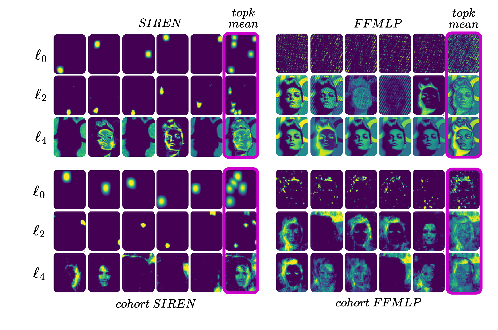
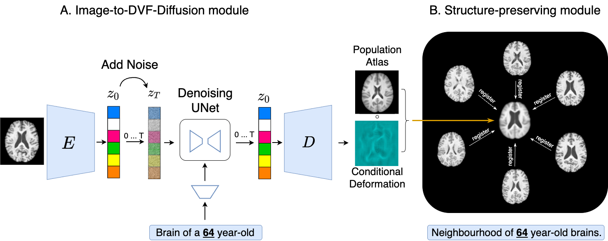
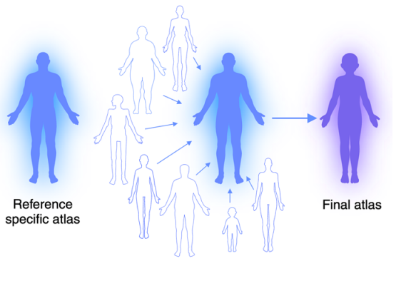
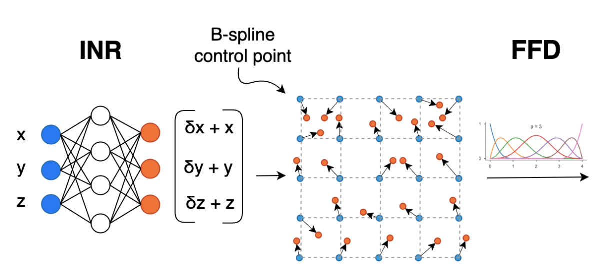
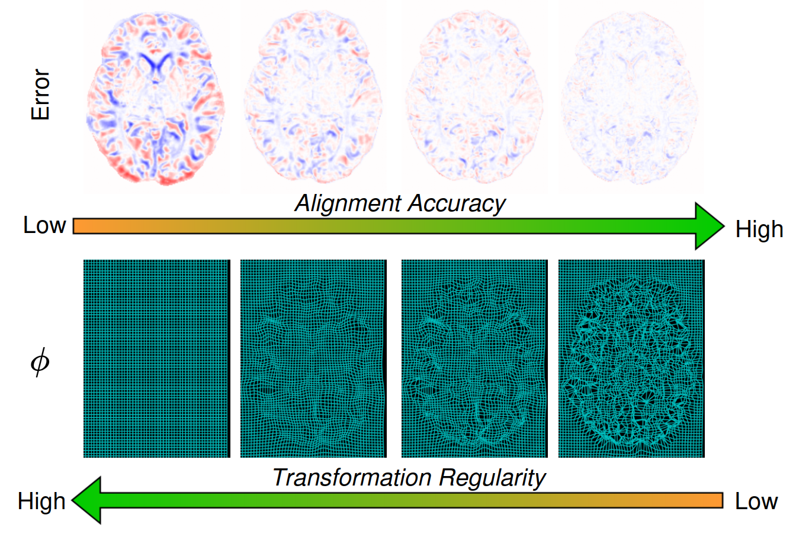
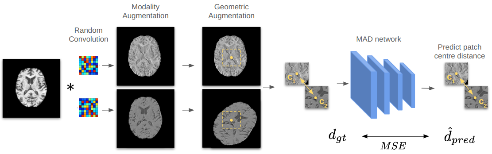

Research Scientist in AI in Medicine · Technical University of Munich
I am a Postdoctoral Researcher at the AI in Medicine Chair of the Technical University of Munich, working at the intersection of medical imaging, neural fields, and representation learning. My research focuses on implicit neural representations and uni- and multi-modal medical image registration.
Vasiliki
vasiliki.sideri-lampretsa [at] tum.de
Technical University of Munich
TUM Klinikum Rechts der Isar
Munich, Germany
Medical Image Registration and Implicit Neural Representations
Best Oral Paper Award, MIDL 2024, Paris for "SINR: Spline-enhanced Implicit Neural Representation for Multi-modal Registration."
1st Place, MIT Sana Bootcamp Hackathon, 2015. Open-source mobile health applications, recognized with an international award and participation in a global innovation event at MIT.
Developing uni- and multi-modal medical image registration methods, including diffeomorphic approaches and multi-contrast registration for robust alignment across modalities.
Exploring neural fields and implicit neural representations as continuous, resolution-independent representations for medical imaging, including cross-patient INR and Lipschitz-regularized formulations.
Learning compact, structured representations from medical images that transfer across modalities and tasks, including sparse autoencoders and self-supervised objectives for clinical imaging.
Co-organizer of the MICCAI 2026 workshop on grid-free approaches to medical image computing, including implicit neural representations and Gaussian splatting.
Co-organizer of the MICCAI 2024 tutorial on applying INRs to registration, reconstruction, super-resolution, shape modeling and segmentation.






Project websites and code repositories
Interviews and features in the research press